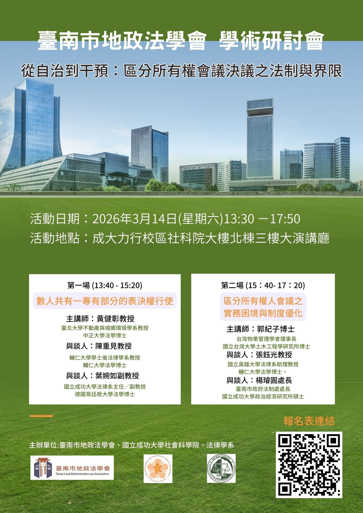
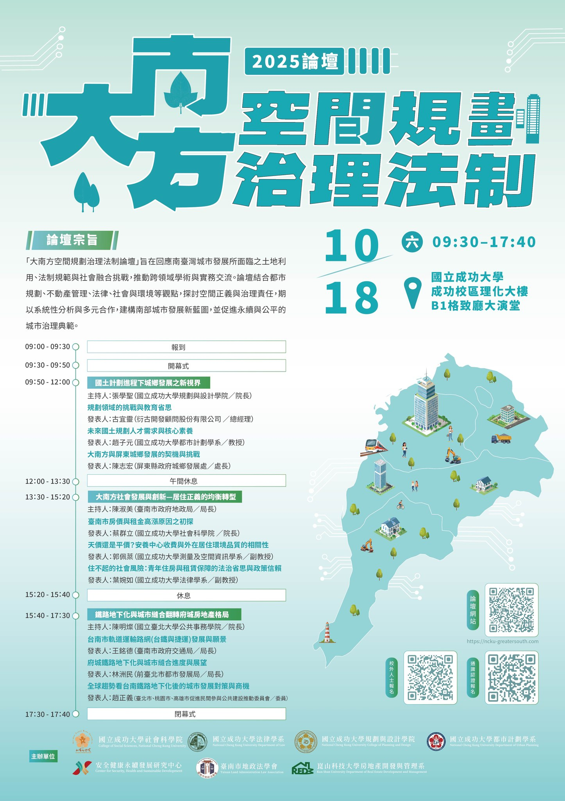
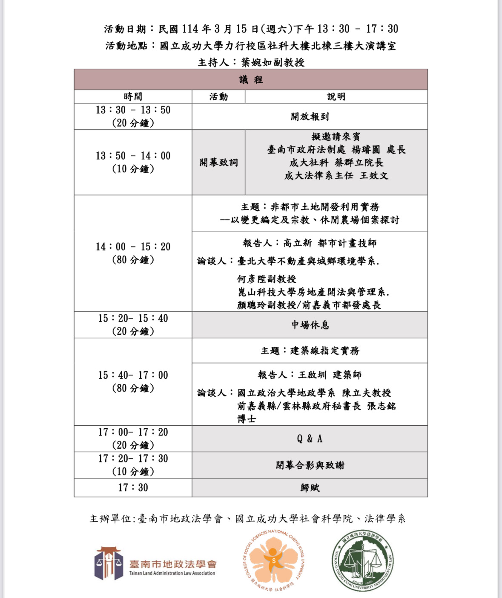

深化高齡權益保護社區法治教育宣導
年度社區法治教育規劃四場次，將高齡權益、農地繼承、不動產信託、詐騙防範與稅務風險等議題帶入社區。
- 第一場
- 2026.05.16｜歸仁區後市里活動中心｜預立安寧、農地繼承
- 第二場
- 2026.06.13｜新化教會｜農地權益、高齡者稅務風險
- 第三場
- 2026.08.29｜安平靈糧堂｜不動產信託登記、信託稅制
- 第四場
- 2026.10.17｜永愛教會｜詐騙面面觀、婚姻制度下的稅務風險
Activities
以下整合公開活動資料、海報與相關新聞連結，便於快速掌握學會近期研討會、論壇與社區法治教育成果。
年度社區法治教育規劃四場次，將高齡權益、農地繼承、不動產信託、詐騙防範與稅務風險等議題帶入社區。

於國立成功大學舉辦學術研討會，討論區分所有權人會議決議、表決權行使、實務困境與制度優化。

跨校、跨系所合作的大型論壇，聚焦國土計畫、居住正義、鐵路地下化與城市發展等南方治理議題。

專業培力講座聚焦農地設廠、土地變更、活化利用與非都市土地開發審查經驗，協助產官學界掌握實務趨勢。
於社區場域推動高齡者權益保護，從監護制度、財產規劃、詐騙防範與現場諮詢切入，讓法律知識更貼近日常生活。
從行政法角度探討地方國土計畫公告實施與人民土地權利損失補償。
Resources